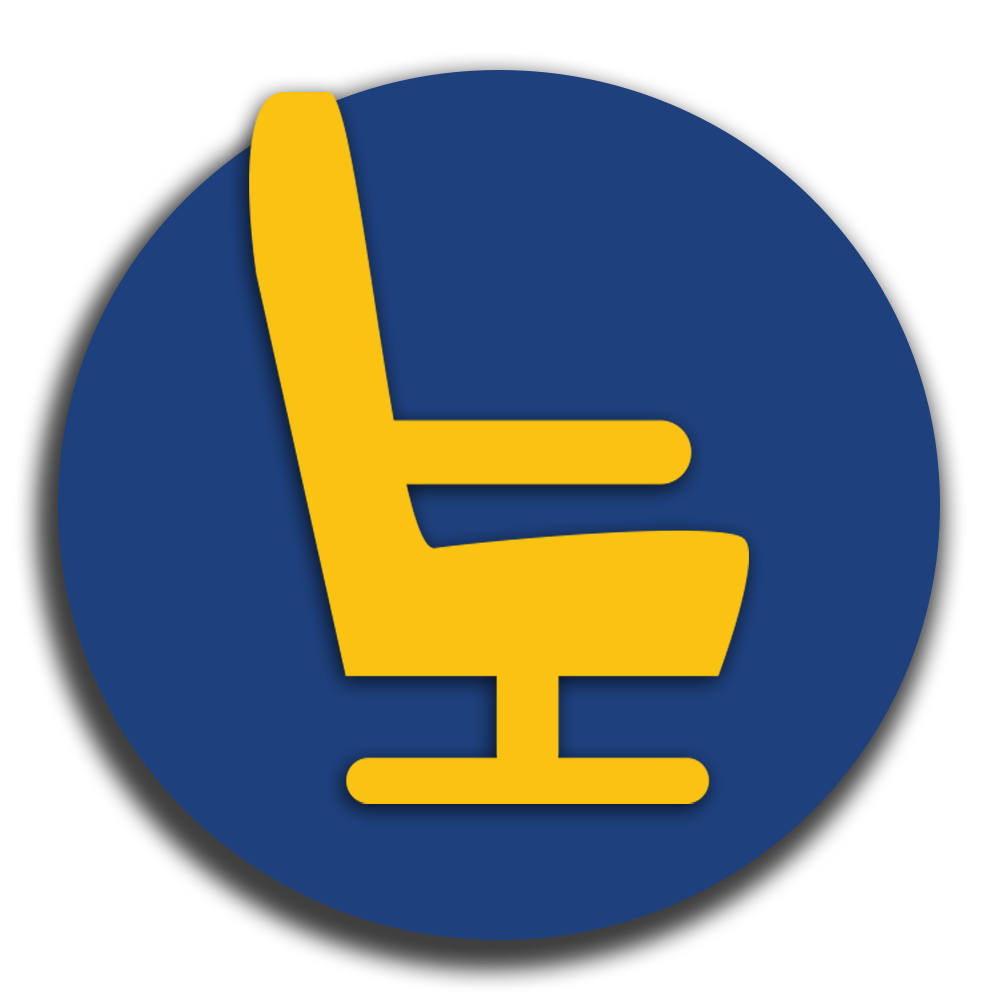

Sitback
Altijd plaats!
Wat is Sitback™?
Heb jij ook altijd het probleem dat je op het peron staat te wachten op je trein en dat je dan moet gokken waar er plaats is?Wij ook! Daarom hebben wij Sitback ontwikkeld. Een app waarmee je kan zien waar er plaats vrij is in de trein.
Zo hoef niet te lopen door overvolle treinen om eindelijk een rustige coupé te vinden maar kun je meteen bij de juiste deur instappen. Wel zo handig!
Technologie:
In verscheidene NS treinen zullen sensoren worden geïnstalleerd in iedere stoel, dit is onder andere mogelijk door de steeds goedkoper wordende technologie. Deze sensoren geven dan via het bestaande wifi-netwerk in de treinen de gegevens door aan de NS servers. Wij lezen die gegevens uit en tonen ze in de app. Dit gebeurt allemaal live, als er dus iemand in de trein opstaat krijg je daar een melding van. Ook herkent de app zelf in welke trein je zit. Als je nog op het perron staat kun je eenvoudig een trein zoeken in een lijst van treinen die binnen 10 minuten vertrekken.Marketing Campagne: (PO)
Het uitgebreide marketing plan en marktonderzoek wat met de app gepaard gaat kun je hier vinden: